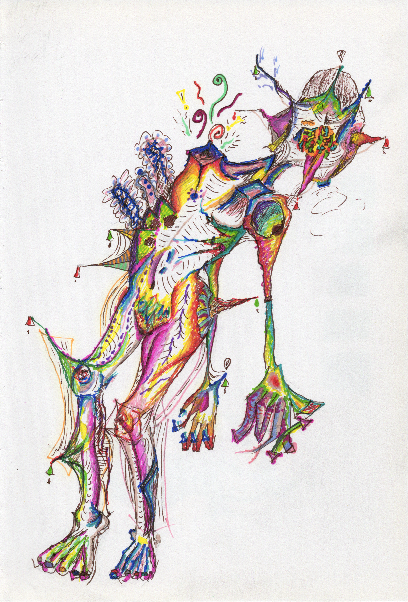
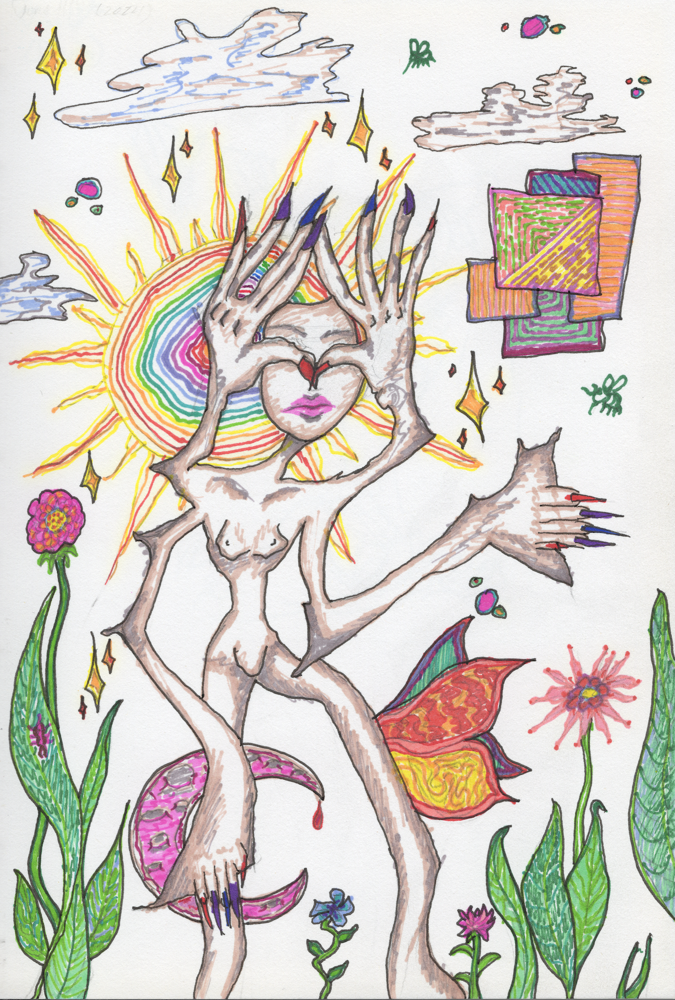

Re: Creativity
I live to look at the world around me. I work to change how the world looks. My efforts make me the master of my own multiverse. This power is formidable and I wield it with confidence.
Synesthete | False Projection


Self portraits, May and June 2024. 5.25 x 7.75 inches
Materials:
The Contact Card


August 2026, Ongoing. 2 x 3.5 inches
These cards may be used to contact me via electronic mail. Each features unique freehand art, a hand written email address, and personal seal stamped from my self carved hanko. If you've received one please send me an email!
Materials:
One must consume in order to create.